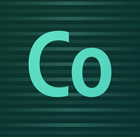

Adam Lehman
Sr. Product Manager - Interactive Development
Brackets is an open source
code editor for the web.

Brackets: The Code Editor
- Focused on web design and development.
- Unrestricted control and customization.
- Remains current with open web standards.
Edge Code
A distribution of Brackets optimized for
Creative Cloud members.
Creative Cloud members.

Brackets: The Open Source Project
A sandbox where the web can experiment
with new ideas in coding.
with new ideas in coding.
Quick Edits
Tools that don't get in your way.
Live Dev
The browser is your canvas.
Let's innovate together.
It's no fun to innovate alone.
An approachable
open source project.
Contributing should be as easy as writing code.
MIT licensed

Developed on GitHub
Made with
JavaScript, HTML and CSS.
It's easy to get started
Build an extension
Extensions are the easiest way to
experiment with new ideas.
experiment with new ideas.
(many of Brackets core features are built as extensions.)
The Brackets Stack
- Twitter Bootstrap
- LESS
- jQuery
- Require.js
- Mustache.js
- CodeMirror
(extensions can use any framework or lib)
We are here to help
- IRC Chat - #brackets on Freenode
-
Mailing List on Google Groups
http://bit.ly/BracketsDevList
- Brackathons
Our development process
- Agile development following scrum
- Pull requests reviewed every day
- New releases every ~2.5 weeks
- External contributions take priority
A vibrant and growing
community
In the first 4 months over 20 developers
outside of Adobe have contributed to Brackets.
outside of Adobe have contributed to Brackets.
Several community extensions available.
The future...
2012: New ideas & core features
2013: Tablet, cloud & beyond
(and more new ideas!)
(and more new ideas!)
Get Involved.
- Project: http://github.com/adobe/brackets
- Wiki: http://github.com/adobe/brackets/wiki
- Backlog: http://bit.ly/BracketsBacklog
- Group: http://groups.google.com/group/brackets-dev
- IRC: #brackets on Freenode
- Twitter: @Brackets
Thanks in Advance